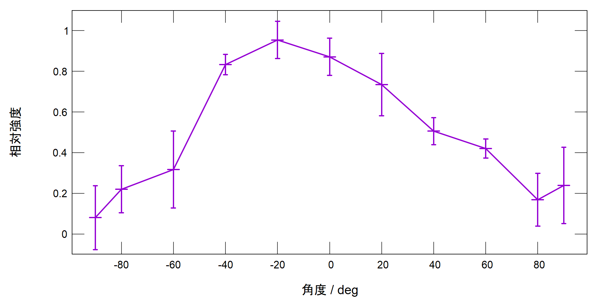

<!DOCTYPE html>
<html lang="en">
  <head>
    <meta charset="utf-8" />
    <meta name="viewport" content="width=device-width, initial-scale=1.0, maximum-scale=1.0, user-scalable=no" />

    <title>PPA発表 鈴木輝</title>
    <link rel="shortcut icon" href="./../favicon.ico" />
    <link rel="stylesheet" href="./../dist/reset.css" />
    <link rel="stylesheet" href="./../dist/reveal.css" />
    <link rel="stylesheet" href="/_assets/theme/solarslide.css" id="theme" />
    <link rel="stylesheet" href="./../css/highlight/zenburn.css" />


  </head>
  <body>
    <div class="reveal">
      <div class="slides"><section  data-markdown><script type="text/template">

# アンテナの指向性による角度推定

<br>
5 PPA 鈴木輝

</script></section><section ><section data-markdown><script type="text/template">

## 背景・目的

<br>

<div style="float:left;">
<div style="position:absolute;left:20%;">
ペンライトの同期 (サークル ライブ演出)
<br>
<br>
動きに連動した同期<br>
↑<br>
姿勢を取得<br>
↑<br>
ポールアンテナの指向性
</div></div>
<!--    <div style="float:right;>   -->


</script></section><section data-markdown><script type="text/template">


</script></section></section><section ><section data-markdown><script type="text/template">

## 実験方法

<div style="float:left;">
<div style="position:absolute;left:10%;">

**主要な機器**

<hr>

受信側
* WiFiモジュール (ESP-WROOM-02U)
* 外付けモノポールアンテナ (TFPD05H08750011)

他、右図の回路に必要なもの
<hr>

発信側

* WiFiルータ (WHR-HP-G300N)


<br><hr>

</div></div>
<div style="float:right;">

</div>
</div>

</script></section><section data-markdown><script type="text/template">

## 実験方法

1. 送受信間の距離 0.50, 1.75, 3.00, 5.50mの各点で
1. 20°ごとに0°から±90°まで (±90°含む)
1. 受信強度を10回分取得 (2アクセスポイント×5回)

**↓** <br>

モノポールアンテナの指向性から<br>十分な精度で角度を知ることができるか？

構内のように種々の雑音がある環境で、<br>家庭用程度の発信源でも十分か？

</script></section></section><section ><section data-markdown><script type="text/template">

## 実験結果

各距離ごとに最大値と最小値を1, 0として得た相対強度の平均<br>
(指向性図)<br>


</script></section><section data-markdown><script type="text/template">

強度の変化 (±90°以外は両隣との平均の変化)<br>


</script></section></section><section ><section data-markdown><script type="text/template">

### 考察

<div style="float:left;">
<div style="position:absolute;left:0%;top:40%">
得られた指向性図はデータシートと<br>同様の特徴を示している

→受信強度の測定自体は的確にできている

</div></div>

<div style="float:right;">

</div>
</div>

</script></section><section data-markdown><script type="text/template">

**一方で**

20°の違いで得られた強度差：平均4.6dB

同一距離・角度での最大最小の差： 平均4.0dB


→少ない回数の測定から推定した角度において<br>少なくとも20°程度のずれは起こりうる


<br>

<hr>

実際に3段階 (0°, 30°, 90°)の判定プログラムを書いて試したが、<br>
記録のとりようがないほど不安定だった。

また、計測は1秒に1回程度でしか動かなかった。
</script></section></section><section ><section data-markdown><script type="text/template">

## まとめ

2.4GHz帯モノポールアンテナの指向性は教室に<br>家庭用ルータという環境でも十分現れる。

すなわち、角度による受信強度の変化は観測できる。

しかし、1回の測定から導いた角度には20°以上の誤差がありうる。

今回制作した受信機は1秒に1回しか測定ができなかったこともあり、<br>
動機で挙げたペンライトのような動くものには不向きである。

</script></section><section data-markdown><script type="text/template">

### 改善案

+ **アンテナと外装の形状を変える**

他のアンテナ形状でより良い強度差が出る可能性がある。

パラボラアンテナ様の外装を付けたりしても指向性は変えられる。

これらは送受信どちらにも言える。

<hr>

+ **WiFiモジュールを変更、または使用しない**

マイコンやライブラリを変えて高速化することも期待できる。

また、混線さえ解決できればマイコンを使わないアナログな回路による手法も考えられる。

</script></section></section><section  data-markdown><script type="text/template">

### 参考資料

+ 高橋光紀,平石広典,"電波強度による位置推定機能を利用した校内ナビゲーションシステムの設計",https://ipsj.ixsq.nii.ac.jp/ej/?action=repository_uri&item_id=110260&file_id=1&file_no=1

+ "ESP8266 Arduino Core",https://arduino-esp8266.readthedocs.io/en/latest/index.html

+ Cisco, "アンテナパターンとその意味", https://www.cisco.com/c/ja_jp/products/collateral/wireless/aironet-antennas-accessories/prod_white_paper0900aecd806a1a3e.html</script></section></div>
    </div>

    <script src="./../dist/reveal.js"></script>

    <script src="./../plugin/markdown/markdown.js"></script>
    <script src="./../plugin/highlight/highlight.js"></script>
    <script src="./../plugin/zoom/zoom.js"></script>
    <script src="./../plugin/notes/notes.js"></script>
    <script src="./../plugin/math/math.js"></script>
    <script>
      function extend() {
        var target = {};
        for (var i = 0; i < arguments.length; i++) {
          var source = arguments[i];
          for (var key in source) {
            if (source.hasOwnProperty(key)) {
              target[key] = source[key];
            }
          }
        }
        return target;
      }

      // default options to init reveal.js
      var defaultOptions = {
        controls: true,
        progress: true,
        history: true,
        center: true,
        transition: 'default', // none/fade/slide/convex/concave/zoom
        plugins: [
          RevealMarkdown,
          RevealHighlight,
          RevealZoom,
          RevealNotes,
          RevealMath
        ]
      };

      // options from URL query string
      var queryOptions = Reveal().getQueryHash() || {};

      var options = extend(defaultOptions, {"controls":true,"progress":true,"controlsTutorial":true,"slideNumber":true,"keyboard":true,"overview":true,"help":true,"pause":true,"mouseWheel":false,"pdfSeparateFragments":false,"helpButtonDisplay":"always"}, queryOptions);
    </script>

    <script src="./../_assets/plugin/chalkboard/plugin.js"></script>
    <script src="./../_assets/plugin/toolbar/toolbar.js"></script>
    <script src="./../_assets/plugin/customcontrols/plugin.js"></script>
    <script src="./../_assets/plugin/helpbutton/helpbutton.js"></script>
    <script src="./../_assets/plugin/menu/menu.js"></script>
    <script src="./../_assets/plugin.js"></script>

    <script>
      Reveal.initialize(options);
    </script>
  </body>
</html>
